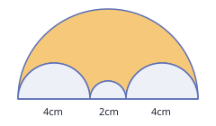
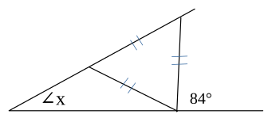

1. 연산 테스트 (1) PDF p.2
받아올림 있는 2위+1위 덧셈 ⏱ 초
- ① $15 + 4 =$19
- ② $22 + 7 =$29
- ③ $59 + 9 =$68
- ④ $32 + 6 =$38
- ⑤ $24 + 6 =$30
- ⑥ $22 + 9 =$31
- ⑦ $19 + 8 =$27
- ⑧ $36 + 8 =$44
- ⑨ $28 + 7 =$35
- ⑩ $27 + 6 =$33
덧셈 가역 (□ 구하기) ⏱ 초
- ① $4 + ($7$) = 11$
- ② $5 + ($8$) = 13$
- ③ $8 + ($9$) = 17$
- ④ $5 + ($9$) = 14$
- ⑤ $7 + ($8$) = 15$
- ⑥ $8 + ($6$) = 14$
- ⑦ $7 + ($8$) = 15$
- ⑧ $3 + ($9$) = 12$
- ⑨ $9 + ($7$) = 16$
- ⑩ $8 + ($9$) = 17$
메모(교사용): 27+6= 과 같은 받아 올림이 있는 2위+1위 테스트의 목적은 덧셈의 직관에 관한 내용을 테스트하는 과정입니다.
2. 연산 테스트 (2) PDF p.3
2위+2위 덧셈 ⏱ 초
- ① $57 + 25 =$82
- ② $25 + 57 =$82
- ③ $27 + 49 =$76
- ④ $76 + 18 =$94
- ⑤ $45 + 17 =$62
- ⑥ $49 + 49 =$98
- ⑦ $58 + 39 =$97
- ⑧ $36 + 27 =$63
- ⑨ $78 + 24 =$102
- ⑩ $36 + 69 =$105
덧셈 가역 (형식은 덧셈, 내용은 뺄셈) ⏱ 초
- ① $23 + ($8$) = 31$
- ② $87 + ($5$) = 92$
- ③ $78 + ($7$) = 85$
- ④ $56 + ($9$) = 65$
- ⑤ $67 + ($7$) = 74$
- ⑥ $37 + ($9$) = 46$
- ⑦ $64 + ($8$) = 72$
- ⑧ $28 + ($6$) = 34$
- ⑨ $86 + ($7$) = 93$
- ⑩ $67 + ($8$) = 75$
메모(교사용): 앞 페이지와 같은 내용입니다. 67 + ( )=75는 형식은 덧셈, 내용은 뺄셈으로 이 과정의 평가로 기본 연산에 대해 평가합니다.
3. 연산 테스트 (3) PDF p.4 · PDF 제목: 연산 테스트 (2)
곱셈의 가역
- ① $15 \times ($4$) = 60$
- ② $15 \times ($6$) = 90$
- ③ $18 \times ($2$) = 36$
- ④ $18 \times ($7$) = 126$
- ⑤ $17 \times ($3$) = 51$
- ⑥ $17 \times ($5$) = 85$
- ⑦ $16 \times ($2$) = 32$
- ⑧ $16 \times ($7$) = 112$
- ⑨ $14 \times ($2$) = 28$
- ⑩ $14 \times ($7$) = 98$
곱셈과 나눗셈
- 1) $\begin{array}{r} 63 \\ \times\;\;\, 7 \\ \hline \end{array}$441
- 2) $\begin{array}{r} 63 \\ \times\; 57 \\ \hline \end{array}$3591
- 3) 다음식의 ( )에 알맞은 수를 쓰시오. $219 \times 7 = ($200$) \times 7 + ($10$) \times 7 + ($9$) \times 7$
- 4) 다음 곱셈을 완성하시오. $\begin{array}{r} 219 \\ \times\;\;\;\, 7 \\ \hline \end{array}$1400$= ($200$) \times 7$,70$= ($10$) \times 7$,63$= ($9$) \times 7$, 합1533
검토: PDF는 세로셈 칸(부분곱 3칸 + 합) 그림입니다. 웹에서는 세로 배치(부분곱 입력칸을 자릿수에 맞춰 오른쪽 정렬)로 그리는 것을 권장합니다.
- 5) 다음을 계산하고 검산하시오. $63 \div 4 =$ 몫15나머지3/ 검산: $4 \times ($15$) + ($3$) = 63$
검토: PDF는 장제법 기호 4)63 와 '검산: ____' 입니다. 검산 칸을 식으로 구조화했습니다.
메모(교사용): 14×( ) = 28과 14×( )=98은 곱의 끝자리 수가 같은 연산 법칙을 확인하는 과정입니다. 14×( )곱의 끝자리 8인 경우는 4×2와 4×7입니다. 4×7=4×(5+2)=4×5+4×2 짝수의 곱은 이렇게 끝자리의 수가 ×1과 ×6이 같고, ×2와 ×7, ×3과 ×8, ×4와 ×9의 끝자리의 수가 같음을 알 수 있습니다. 모두 곱셈의 합과 차의 법칙을 통해 규칙을 찾을 수 있습니다. 이는 3의 배수, 9의 배수 판정법을 학습하는 기초가 됩니다.
4. 연산 테스트 (4) PDF p.5 · PDF 제목: 연산 테스트 (3)
곱셈의 가역
- ① $56 \times ($7$) = 392$
- ② $35 \times ($5$) = 175$
- ③ $68 \times ($9$) = 612$
- ④ $76 \times ($3$) = 228$
- ⑤ $48 \times ($5$) = 240$
- ⑥ $59 \times ($7$) = 413$
- ⑦ $37 \times ($9$) = 333$
- ⑧ $83 \times ($7$) = 581$
- ⑨ $92 \times ($3$) = 276$
- ⑩ $43 \times ($8$) = 344$
짝수, 홀수, 배수
- 1. 다음에서 3의 배수를 찾아 ○표 하세요.
10101304804098136201
- 2. 다음에서 9의 배수이며 동시에 5의 배수를 찾아 ○표 하세요.
31053052040999126306017102151440225
- 3. 다음에서 “짝수” ○표, “홀수”이면 ×표를 하시오. ($a, b$는 자연수)① $2\times 8$O② $2\times a$O③ $2\times 5-1$X④ $2\times a-1$X⑤ $2\times 9+2$O⑥ $2\times b+1$X
검토: ②④⑥의 a, b는 PDF에 조건이 없어 '자연수'로 가정했습니다.
메모(교사용): 어떤 수×2는 2의 배수, 2의 배수 + 2의 배수=2의 배수⇒2×a+2×b=2×(a+b) 같은 연산 법칙으로 3의 배수+ 3의 배수=3의 배수⇒3×a+3×b=3×(a+b) 이러한 규칙으로 자연수의 각 자리 숫자의 합이 3의 배수가 되면 3의 배수, 각 자리 숫자의 배수가 9의 배수가 되면 그 수는 9의 배수가 되는 법칙을 이해하면 큰 수의 연산도 쉽게 할 수 있습니다.
5. 공배수, 공약수, 분수 PDF p.6
공배수와 공약수
- 1. 24와 28의 최대공약수를 구하시오. (나눗셈 사다리: $\big)\,24\quad 28$)4
- 2. 24와 28의 최소공배수를 구하시오. (나눗셈 사다리: $\big)\,24\quad 28$)168
분수
- ① $\dfrac{5}{6}-\dfrac{1}{3}=$1/2
- ② $2\dfrac{1}{4}-\dfrac{3}{4}=$3/2
- ③ $\dfrac{3}{5}$의 단위분수를 쓰시오.1/5
- ④ $1-\dfrac{1}{3}=$2/3
- ⑤ $2\dfrac{1}{3}-\dfrac{1}{2}=$11/6
- ⑥ 피자 한 판의 $\dfrac{2}{5}$만큼 먹었다. 먹고 남은 피자는 얼마인가?3/5판,3조각
검토: '조각' 답(3)은 피자를 5조각으로 나눴다고 가정한 값입니다. PDF에 조각 수 조건이 없어 확인이 필요합니다.
- ⑦ $\dfrac{2}{3}$와 크기가 같은 분수를 모두 고르시오.
$\dfrac{3}{5}$$\dfrac{4}{6}$$\dfrac{9}{15}$$\dfrac{16}{24}$$\dfrac{22}{33}$
메모(교사용): 본 테스트 과정에는 없는 내용으로 중1 과정에서 학습하는 거듭제곱을 “읽고 말하는 수학” 에서는 2권에서 학습합니다. 자연수의 짝수와 배수, 소수와 합성수, 약수와 인수 등 개념을 정확하게 학습하게 되면 수학이라는 학문의 부분과 전체를 이해하는 데 도움이 됩니다.
6. 연산 법칙과 응용문제 PDF p.7
법칙적 계산
- ① $36\times 12-36\times 2 = 36\times($10$)$
- ② $251\times 3+251\times 7=251\times($3$+$7$)$
- ③ $2519\times 99=2519\times($100$)-2519$
- ④ $3+5\times 2-3 =$10
- ⑤ $3+6\times 2-(8+4) =$3
- ⑥ $3+3+3+3+3=3\times($5$)$ / $☆+☆+☆+☆+☆=☆\times($5$)$ / $a+a+a+a=a\times($4$)$ / $25\times 4+25+25=25\times($6$)$
- ⑦ $a\times 3=\color{red}{3a}$ 이면 ($a\times 3$은 $a$가 셋.) / $3a+3a=$$6a$/ $3a-2a=$$a$
응용문제
- ① 다음을 계산하고 구하는 방법을 설명하시오. $\dfrac{1}{4}\times\dfrac{1}{3}=$1/12/ 설명:✎
모범답안: 분자끼리, 분모끼리 곱합니다. 1/4의 1/3은 한 칸을 다시 3등분한 것이라 전체의 1/12입니다.
- ② $\dfrac{1}{4}\div\dfrac{1}{3}=$3/4/ 설명:✎
모범답안: 나누는 수의 역수를 곱합니다: 1/4 × 3/1 = 3/4. (1/3이 1/4 안에 3/4번 들어감)
검토: PDF에는 번호가 ①만 있고 두 번째 문항은 번호가 없습니다. ②로 붙였습니다.
- ③ 달걀 한 판의 $\dfrac{2}{3}$을 먹었다. 먹고 남은 달걀 수를 구하시오. 식:30×(1-2/3)답:10개
모범답안: 30 × (1 − 2/3) = 10 (개)
검토: 달걀 한 판 = 30개로 가정했습니다(문제에 개수 없음).
- ④ 사과 한 상자의 $\dfrac{2}{3}$를 먹었다. 먹고 남은 양을 분수로 나타내시오.1/3
메모(교사용): 법칙적 연산을 인지 여부를 확인하는 테스트 페이지입니다. 곱셈과 나눗셈을 기계적인 연산이 아닌 234×5는 234가 다섯이라는 개념의 인지 여부를 확인합니다. 분수의 곱셈은 왜 “분자끼리 곱하고 분모끼리 곱하는” 원리의 이해 여부를 확인하는 페이지입니다. 분수의 나눗셈은 왜 역수로 곱하는지 등을 테스트합니다. 분수 나머지 비율의 이해. 사과를 2/5의 나머지를 구체적인 것과 형식적인 내용을 모두 인지하는지를 확인합니다.
7. 소수와 절댓값 PDF p.8
소수
- ① 다음 소수를 읽으시오. $34.1107$:삼십사 점 일일영칠
- ② 다음을 계산하시오. $25.12+0.19=$25.31/ $25.12-0.19=$24.93/ $0.1\times 0.1=$0.01/ $3.14\times 99+3.14=$314/ $0.1\div 0.1=$1
- ③ 다음 소수를 분수로 나타내시오. $0.125 =$1/8
- ④ 시간의 분 단위 45분을 시 단위로 바꿔 분수와 소수로 나타내시오. 분수:3/4시간 / 소수:0.75시간
절댓값
- 1. “절댓값”을 설명하시오.✎
모범답안: 수직선에서 0으로부터 그 수까지의 거리. 부호를 뗀 크기이며 항상 0 이상입니다.
- 2. 다음 두 수의 크기와 절댓값의 크기를 비교하세요. (○ 안에 >, =, <)
- ① $-5$<$+7$ / $|-5|$<$|+7|$
- ② $-5$<$+1$ / $|-5|$>$|+1|$
- ③ $-8$<$+6$ / $|-8|$>$|+6|$
- ④ $-8$<$+10$ / $|-8|$<$|+10|$
- 3.① $+4-(-5)=$9
- 3.② $(-3)-(+2)+(-3)=$-8
- 3.③ $9-\left\{-\dfrac{1}{5}+(-7^{2})-(-12)\right\} =$231/5
검토: (-7²)는 7에만 지수가 붙은 표기(= -49)로 읽었습니다. (-7)²(=49)를 의도했다면 답은 -259/5 입니다.
8. 문자와 식 (1) PDF p.9
1. 다음 문제에서 ( )에 맞으면 ○표 틀리면 ×표를 하시오.
- ① $a<0$일 때 $a$ 는 양수. (X)
- ② $a<0$일 때 $-a$ 는 양수. (O)
- ③ $a>0$일 때 $a$ 는 양수. (O)
- ④ $a>0$일 때 $-a$ 는 양수. (X)
- ⑤ $a<0$고 $|a|=-a$ 이면 $-a$는 양수. (O)
- ⑥ $a<0$고 $|a|=-a$ 이면 $-a$는 음수이다. (X)
2. $a=\left(-\dfrac{1}{6}\right),\ b=\left(-\dfrac{2}{3}\right)$일 때 다음을 계산하시오.
- ① $2a=$-1/3
- ② $-\dfrac{5}{6}b=$5/9
9. 문자와 식 (2) PDF p.10
다음 방정식의 해를 구하여라.
- ① $3x-2 = 12+4x$ / $x=$-14
- ② $5(2-2x) = -5x+15$ / $x=$-1
- ③ $\dfrac{x-2}{6}-\dfrac{2x-1}{3} = \dfrac{3}{2}$ / $x=$-3
- ④ $\dfrac{1}{3}x-0.5(x-1) = 2-\dfrac{1-3x}{2}$ / $x=$-3/5
10. 비와 비율 (1) PDF p.11
비와 비율
- 1. 다음 비의 기준량과 비교량을 쓰시오. $4 : 8 \rightarrow$ 기준량:8비교량:4
- 2. 비의 값을 설명하시오. 설명:✎
모범답안: 비교하는 양을 기준량으로 나눈 값(비교하는 양 ÷ 기준량). 예) 4:8의 비의 값은 4/8 = 1/2.
- 3.① 다음 비의 값을 백분율로 나타내시오. $\dfrac{7}{5} =$140$\%$
- 3.② $1 : 8 =$12.5$\%$
2. 다음을 계산하여라
- ① 30,000원을 1년에 10%의 이율로 이자를 받기로 하고 3년간 예금하면 3년 후 받을 금액은 얼마인가?39000원
검토: 단리로 계산(39,000원)했습니다. 복리로 의도했다면 39,930원입니다. 학년(초6 비율)상 단리가 자연스럽지만 확인이 필요합니다.
- ② 농도 20%의 소금물 250g에는 소금이 몇 g 녹아있는가?50g
11. 비와 비율 (2) PDF p.12 · PDF 제목: 비와 비율 (1)
도형과 비
- 1. 세 변의 길이의 비가 5:4:3인 직각삼각형의 둘레가 36㎝일 때, 이 삼각형의 넓이를 구하시오.54㎠
- 2. $\dfrac{1}{4}a = \dfrac{3}{14}b$일 때 $a$와 $b$를 가장 작은 자연수의 비를 구하시오. $a : b =$6$:$7
- 3. 다음 색칠한 부분의 둘레와 넓이를 구하는 식을 쓰시오. 둘레:10π㎝ / 넓이:8π㎠

모범답안: 둘레 = (10×π÷2) + (4×π÷2) + (2×π÷2) + (4×π÷2) = 10π (π=3.14이면 31.4㎝). 넓이 = (5×5×π÷2) − (2×2×π÷2 + 1×1×π÷2 + 2×2×π÷2) = 8π (π=3.14이면 25.12㎠).
검토: '식을 쓰시오'라 채점은 식 확인(수동)을 권장합니다. 숫자 답은 참고용입니다.
- 4. 다음 도형에서 $\angle x$의 값을 구하시오.24°

검토: 그림의 같은 길이 표시가 BD=BC=CD(정삼각형)라서 ∠BCD=60°, ∠ACB=180−84−60=36°, ∠ABC=120°, x=24°입니다. 교과서의 흔한 유형(AB=BC=CD, 외각 84°)이라면 x=28°이므로 그림 의도를 확인해 주세요.
12. 응용문제 및 평가 PDF p.13
1. 다항식의 합과 차. $A=2x+2y,\ B=-2x-3y$ 일 때 다음을 계산하시오.
- ① $A+B=$$-y$
- ② $A-B=$$4x+5y$
2. 다음을 계산하시오.
- ① $(a+b)^{2}=$$a^2+2ab+b^2$
- ② $\dfrac{1}{(a+b)}+\dfrac{1}{(a-b)}=$$2a/(a^2-b^2)$
3. 다음 해를 구하는 식을 쓰시오.
- 1) 연속하는 세 짝수의 합이 42일 때, 이 세 짝수를 구하는 식을 쓰시오. 식:✎세 짝수:12,14,16
모범답안: 연속하는 세 짝수의 합은 x−2, x, x+2, 연속하는 세 짝수를 구하는 식은 x−2+x+x+2=42 ⇒ 3x=42 ⇒ x=14
검토: PDF에 파란 글씨로 예시 답이 적혀 있습니다(교사용 예시). 학생 화면에는 숨기고 해설로 쓰는 것을 권장합니다.
- 2) 어느 농장에서 오리와 염소를 합해 20마리를 기르는데 다리를 세어보니 다리의 합이 54개이다. 이 농장에서 기르는 염소와 오리는 각각 몇 마리인가? 식:✎염소:7마리, 오리:13마리
모범답안: 오리를 x마리라 하면 2x + 4(20−x) = 54 ⇒ x = 13. 오리 13마리, 염소 7마리